От математической абстракции к инженерному прорыву
Математическая абстракция (XIX век)
Гиперболоид - это тип поверхности второго порядка. Существует два вида:
Однополостный гиперболоид: Похож на «башню» с плавной талией.
Двуполостный гиперболоид: Напоминает два противоположно направленных «колокола».
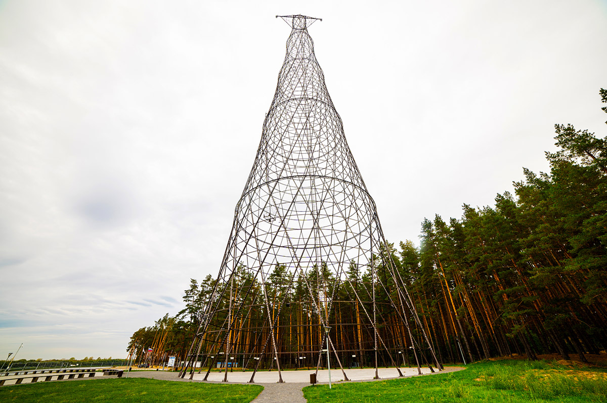
Шуховская башня
Изначально эти поверхности изучались как чисто математические объекты в аналитической геометрии. Первую модель однополостного гиперболоида создал немецкий математик Артур Кэли в 1870-х годах.
Инженерное открытие и первый прорыв (Конец XIX - начало XX века)
Гений заключался в том, чтобы увидеть в математической модели практическую конструкцию.
Владимир Григорьевич Шухов (1853-1939) — отец гиперболоидных конструкций.
В 1896 году он запатентовал «Ажурную башню» — сетчатую конструкцию в форме однополостного гиперболоида вращения.
Принцип Шухова: Используя прямые металлические стержни, расположенные по образующим гиперболоида, он получал невероятно прочную, легкую и экономичную пространственную структуру. Такая решетчатая система идеально работает на растяжение-сжатие, устойчива к ветровым нагрузкам и требует минимального количества материала.
Первая реализация: Всемирная выставка в Нижнем Новгороде (1896) — водонапорная башня Шухова (высота 25,6 м). Ее успех доказал жизнеспособность технологии.
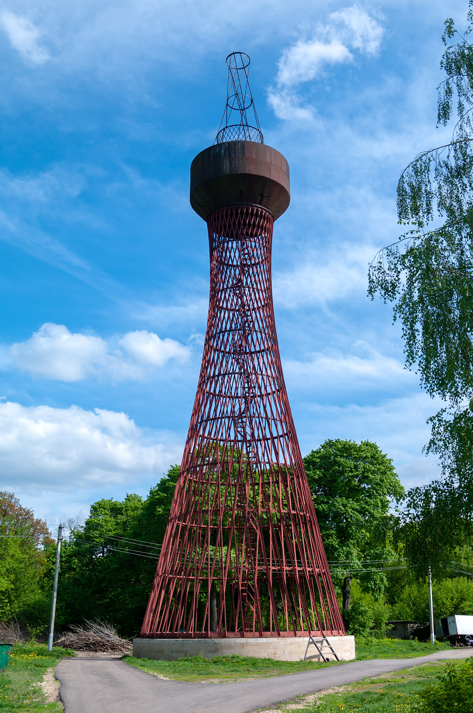
Гиперболоид Шухова: Инженерный гений
В этом видео вы увидите, как работает принцип гиперболоидных конструкций Шухова
и почему они до сих пор остаются революционными в архитектуре.
Гиперболоидные конструкции Шухова: от математики к архитектуре
Почему это был прорыв?
Прочность и легкость: Каркас распределяет нагрузку оптимально.
Экономичность: На 50-90% меньше металла, чем у сплошных башен.
Технологичность: Прямые элементы легко производить, монтировать и рассчитывать.
Устойчивость: Гиперболическая форма обеспечивает максимальную устойчивость при минимальной материалоемкости.
Эстетика: Уникальный узнаваемый облик, где красота рождается из математической логики.
Великие ученые
Пионеры гиперболоидных конструкций
Учёные-математики и геометры
(Изучение формы)
Портрет Жерара Дезарга
Жерар Дезарг (1591–1661)
Французский математик, один из основателей проективной геометрии. Именно в проективной геометрии однополостный гиперболоид является линейчатой поверхностью (состоящей из прямых линий). Это его ключевое свойство для архитектуры.
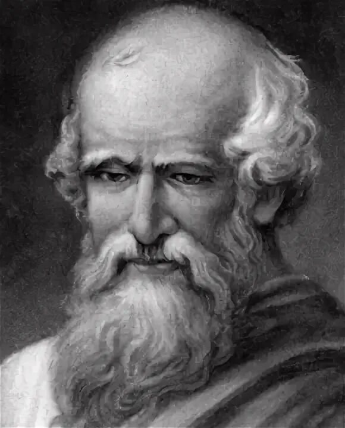
Портрет Архимеда
Архимед (ок. 287 – 212 до н.э.)
Хотя он и не знал уравнения гиперболоида, он изучал конические сечения (гиперболу, эллипс, параболу). Вращение гиперболы вокруг её оси и порождает гиперболоид, так что его работы заложили основу.
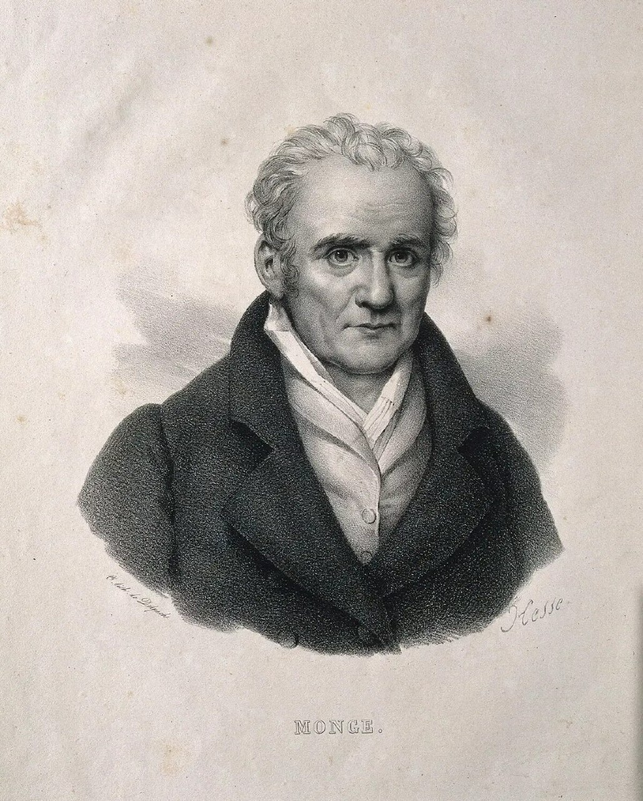
Портрет Пьера-Луи Монжа
Пьер-Луи Монж (1746–1818)
Французский геометр, основатель начертательной геометрии. Детально описал способы задания и построения линейчатых поверхностей, включая гиперболоид, что имело огромное прикладное значение для черчения и инженерного дела.
Учёные-инженеры и архитекторы
(Воплощение в жизнь)
Здесь на первый план выходит Владимир Григорьевич Шухов (1853–1939) — гениальный русский и советский инженер, изобретатель, учёный. Именно он сделал слово «гиперболоид» знаменитым в мире архитектуры и строительства.
Владимир Григорьевич Шухов
В.Г. Шухов в 1896 году патентовал сетчатые покрытия в виде оболочек и первую в мире гиперболоидную башню (стальную сетчатую конструкцию). Он не открыл геометрическую фигуру, но гениально применил её свойство линейчатости в строительстве.
Ключевая идея Шухова: Гиперболоид можно собрать из прямых металлических балок (стержней), что делает конструкцию прочной, легкой, ветроустойчивой и невероятно экономичной по материалам.
Самые известные реализации: Шуховская башня на Шаболовке в Москве (1919-1922), сетчатые своды и перекрытия ГУМа, Киевского вокзала, десятки водонапорных башен и маяков по всей России.
Наследие: Его идеи повлияли на архитекторов всего мира (Гауди, Оскар Нимейер, Норман Фостер, который прямо называет Шухова своим вдохновителем).
Математическая теория
Геометрия гиперболоидов
Определение гиперболоида
Гиперболоиды
Гиперболоиды — это вид поверхностей второго порядка в трёхмерном пространстве. Они относятся к линейчатым поверхностям, то есть могут быть образованы движением прямой линии.
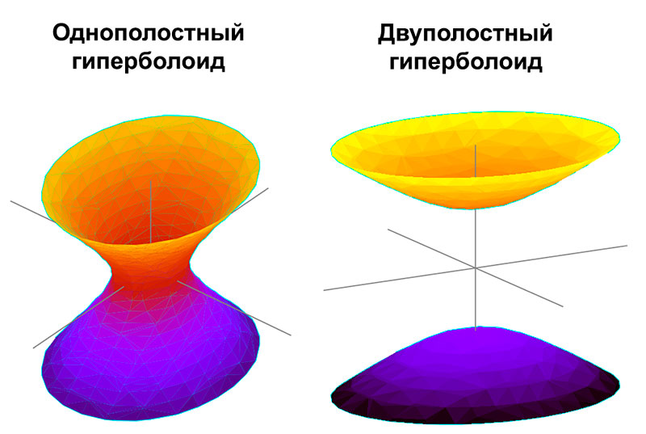
Однополостный и двуполостный гиперболоиды
1. Однополостный гиперболоид
Каноническое уравнение:
x²/a² + y²/b² - z²/c² = 1
Геометрическое описание:
Поверхность, состоящая из одной полости (связная), имеет форму, похожую на «седло», бесконечно расширяющуюся вдоль оси OZ. Она не является поверхностью вращения, если a ≠ b.
Вращение гиперболоида: Наглядная демонстрация
В этом видео вы увидите, как гипербола вращается вокруг своей оси,
образуя гиперболоид вращения, и как меняются его сечения.
Геометрическое построение гиперболоида вращения
Свойства:
Линейчатость: Однополостный гиперболоид — дважды линейчатая поверхность. Это означает, что через каждую его точку проходят две разные прямые линии, целиком лежащие на поверхности. Эти прямые называются образующими.
Геометрическое описание:
Поверхность состоит из двух отдельных полостей (две несвязные части), симметричных относительно плоскости OXY. Полости расположены при z ≥ c и z ≤ -c. Форма напоминает два бесконечных «чашеобразных» выступа.
Свойства:
Не является линейчатой поверхностью в вещественном пространстве.
Сечения плоскостями:
Плоскостью z = h, где |h| ≥ c: эллипс (x²/a² + y²/b² = h²/c² - 1). При |h| = c эллипс вырождается в точку (вершины гиперболоида). При |h| < c — вещественных сечений нет.
Плоскостями, параллельными координатным плоскостям XOZ и YOZ: гиперболы.
Плоскостью OXY: мнимый эллипс.
Гиперболоиды в математическом моделировании
3. Гиперболоид вращения
Частный случай гиперболоида, полученный вращением гиперболы вокруг одной из её осей.
Однополостный гиперболоид вращения: образуется вращением гиперболы x²/a² - z²/c² = 1 вокруг мнимой оси OZ. Его уравнение: (x² + y²)/a² - z²/c² = 1. Все горизонтальные сечения — окружности.
Двуполостный гиперболоид вращения: образуется вращением гиперболы z²/c² - x²/a² = 1 вокруг вещественной оси OZ. Его уравнение: z²/c² - (x² + y²)/a² = 1.
4. Основные параметры и элементы
Центр гиперболоида: Для обоих видов, заданных каноническими уравнениями, центр находится в начале координат (0,0,0). Поверхность центрально-симметрична.
Вершины: У двуполостного гиперболоида есть две вершины: (0,0,c) и (0,0,-c). У однополостного гиперболоида вещественных вершин нет.
Полуоси (a, b, c): Вещественные положительные числа, определяющие «растяжение» поверхности вдоль соответствующих осей.
Асимптотический конус: Для обоих гиперболоидов, заданных уравнениями x²/a² + y²/b² - z²/c² = ±1, существует общий асимптотический конус с уравнением x²/a² + y²/b² - z²/c² = 0. При удалении от центра гиперболоиды неограниченно приближаются к этому конусу.
Гиперболоиды в архитектуре
Самые известные гиперболоидные сооружения в мире
Гиперболоидные конструкции нашли широкое применение в архитектуре по всему миру. От первых изобретений Шухова до современных небоскребов — эти сооружения поражают своей прочностью, элегантностью и инженерным гением.
Классические сооружения В.Г. Шухова
Владимир Шухов создал более 200 гиперболоидных сооружений. Вот самые знаменитые:
1Шуховская башня
Автор: Владимир Григорьевич Шухов
Ажурная стальная башня высотой 160 метров, построенная как радиобашня. Состоит из шести секций-гиперболоидов.
Значение: Первая в мире гиперболоидная башня, шедевр инженерного искусства.
Интересный факт: По легенде, идею Шухову подсказала плетёная корзина.
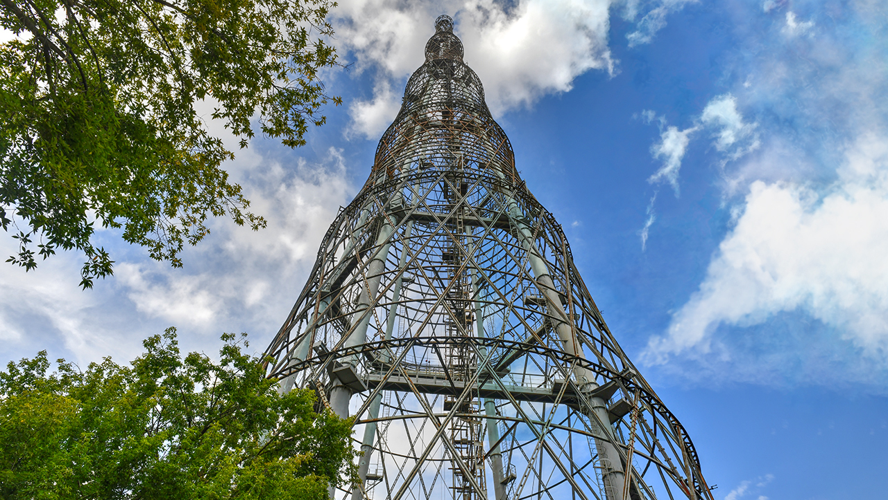
2Аджигольский маяк
Автор: В. Г. Шухов
Гиперболоидный маяк высотой 64 метра. На момент постройки был самым высоким маяком в СССР.
Значение: Блестящий пример применения технологии в суровых условиях.
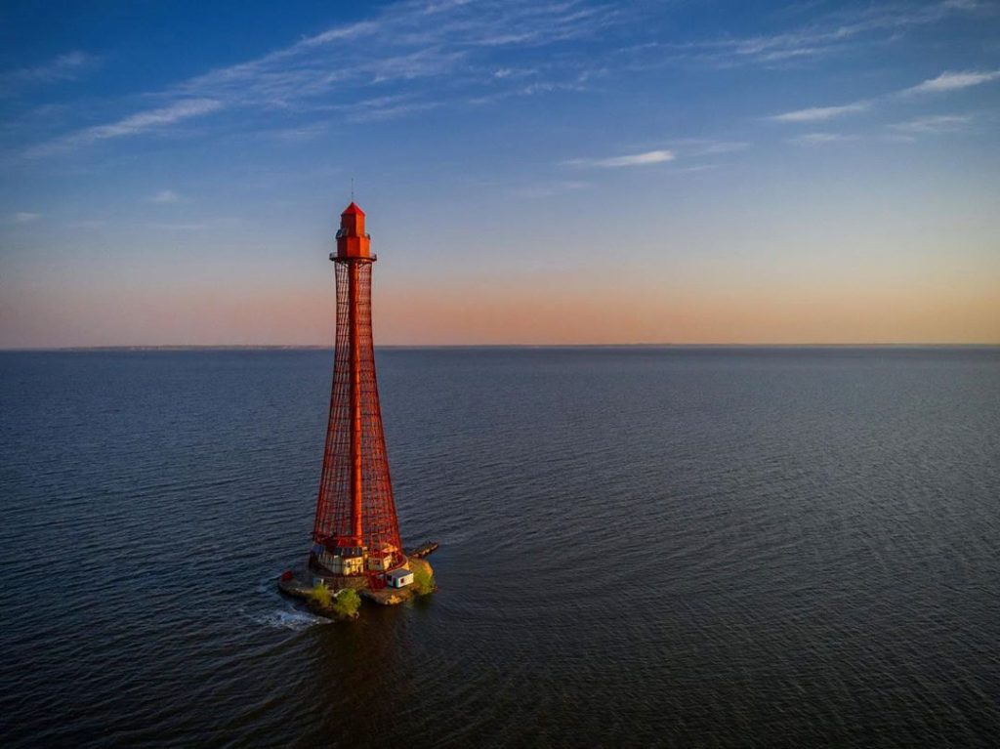
3Баболовская башня
Автор: В. Г. Шухов
Водонапорная башня в неоготическом стиле, но её каркас — классический гиперболоид.
Значение: Один из ранних примеров применения гиперболоида в гражданском строительстве.
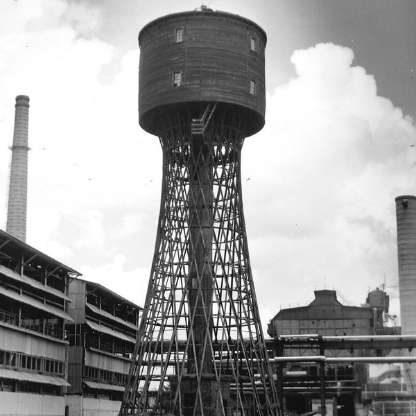
Современные гиперболоидные сооружения
Идеи Шухова вдохновили архитекторов по всему миру:
4Си-Эн Тауэр
Легендарная телебашня высотой 553 метра, долгое время бывшая самым высоким свободно стоящим сооружением в мире.
Особенность: Верхняя часть (шпиль) — классическая гиперболоидная конструкция из стальных труб.
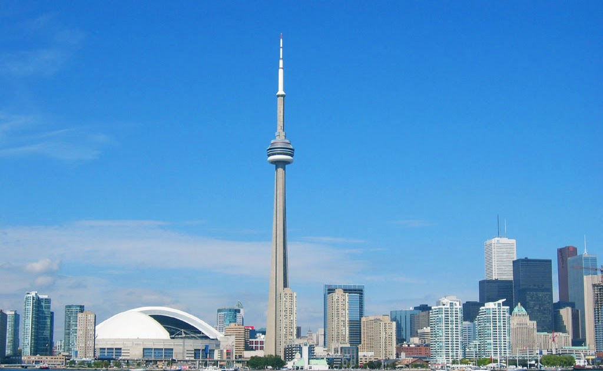
5Телебашня в Гуанчжоу
Самая высокая телебашня в мире (600 м). Её изящный, "песочный" профиль с тонкой талией создан с использованием принципов гиперболоидной формы.
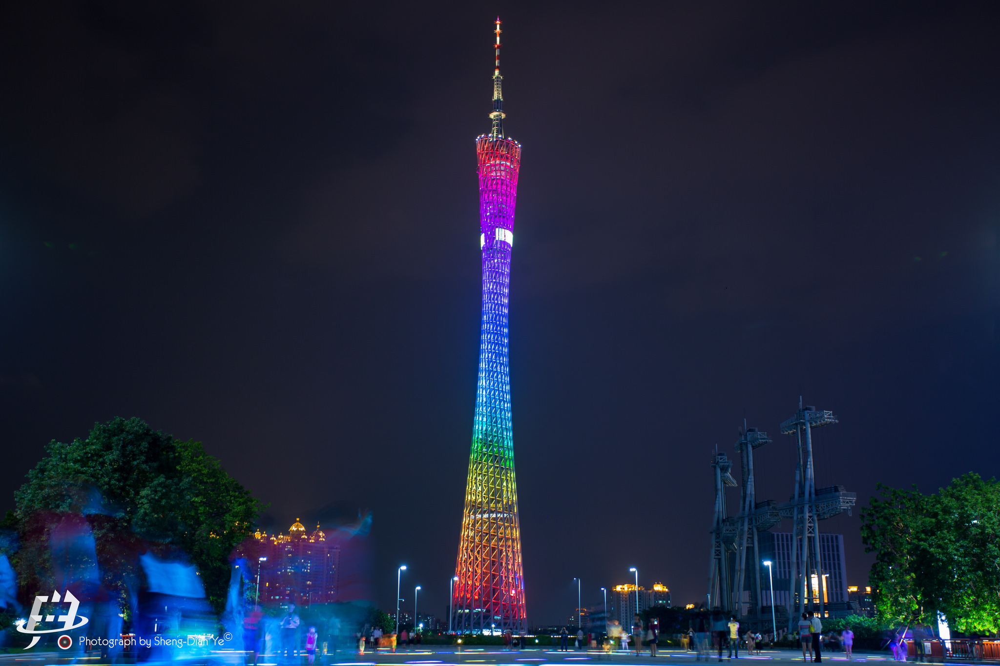
6Телекоммуникационная башня Монжуик
Автор: Сантьяго Калатрава
Футуристическая 136-метровая башня-небоскрёб. Вращающиеся по высоте этажи формируют сложную "скрученную" поверхность, отсылающую к гиперболоиду.
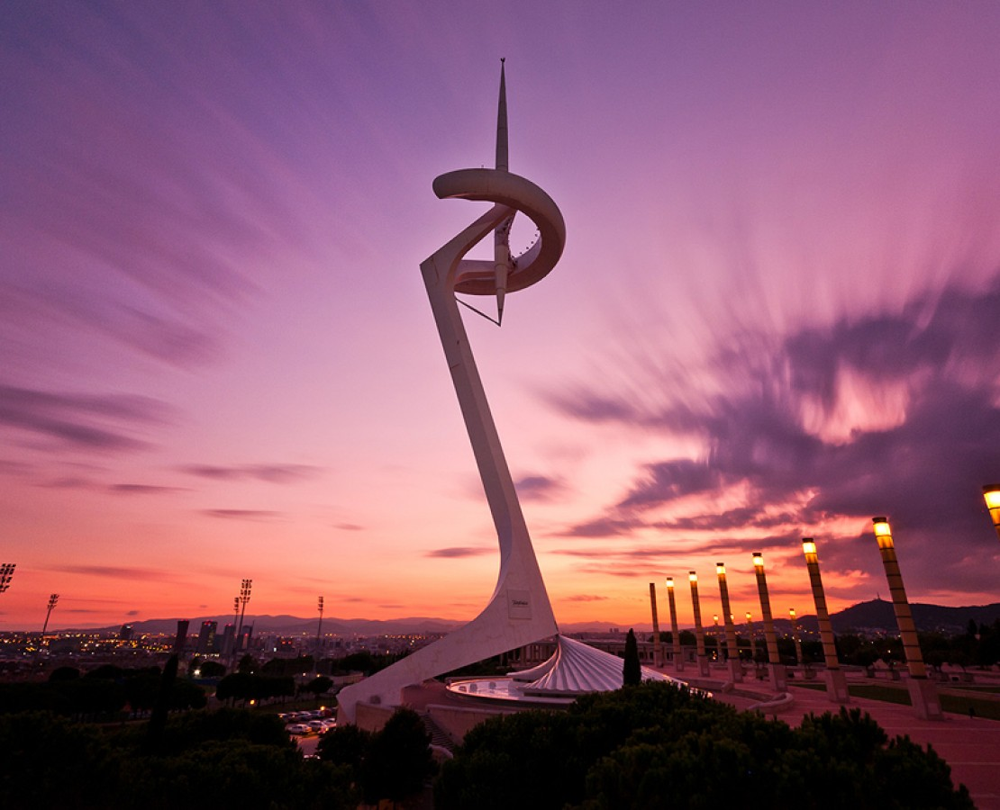
Наследие Шухова в современной архитектуре
Идеи Владимира Шухова продолжают вдохновлять архитекторов и инженеров по всему миру. Его гиперболоидные конструкции доказали, что математическая красота может быть воплощена в прочных, экономичных и эстетически привлекательных сооружениях. От телебашен до небоскребов, от маяков до спортивных арен — гиперболоидные формы продолжают менять облик наших городов.
Практические задания
10 задач по гиперболоидам
Современное применение
Современное применение гиперболоидов в науке и технике
Строительство и архитектура:
Башни и мачты: Гиперболоидные сетчатые конструкции (как у Шухова) обеспечивают исключительную прочность при минимальном расходе материала. Применяются в высотных радиомачтах, телебашнях, опорах ЛЭП и ветрогенераторах. Устойчивы к ветровым нагрузкам.
Купола и перекрытия: Легкие и прочные пространственные конструкции для стадионов, планетариев, выставочных павильонов.
Архитектурный биомиметический дизайн: Форма гиперболоида вдохновляет современных архитекторов, создающих эстетичные и энергоэффективные здания-скульптуры.
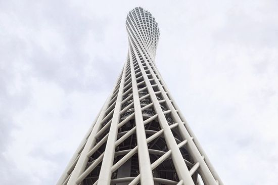
Наука и техника:
Ядерная энергетика и термояд: Вакуумные камеры реакторов типа токамак для управляемого термоядерного синтеза имеют форму тора (бублика), но их магнитные ловушки (магнитные поверхности) часто описываются гиперболоидными уравнениями.
Оптика и антенны: Гиперболические зеркала и линзы используются в телескопах (как вторичные зеркала), прожекторах, спутниковых антеннах для фокусировки излучения. Гиперболоидные линзы способны фокусировать пучок света без сферических аберраций. Форма гиперболоида вращения применяется в зеркальных антеннах для создания направленного луча.
Материаловедение и нанотехнологии: Углеродные нанотрубки и фуллерены имеют кристаллическую решетку с гиперболической геометрией. Искусственные композиты с гиперболической дисперсионной поверхностью используются для управления светом в наномасштабе (гиперлинзы для субдифракционной микроскопии).
Геодезия и навигация: Гиперболоидные координаты лежат в основе радионавигационных систем (типа LORAN, "Чайка"). Положение объекта определяется как точка пересечения нескольких гипербол, построенных на основе разности расстояний до фиксированных станций.
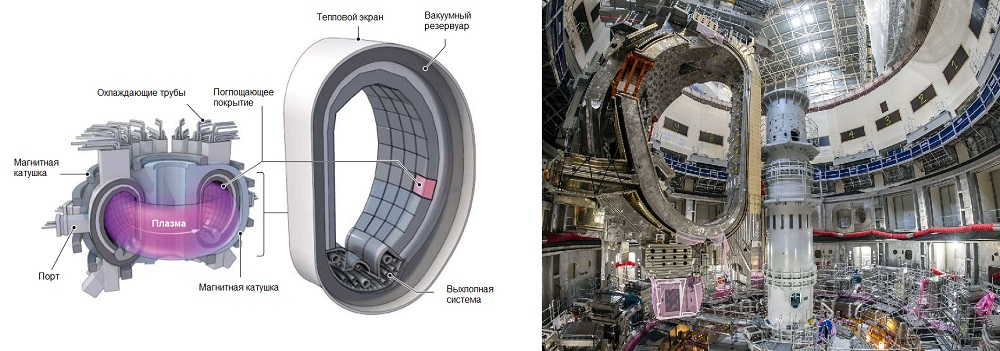
Будущие перспективы:
Аддитивные технологии (3D-печать): Свобода в создании сложных гиперболоидных решетчатых структур для аэрокосмической отрасли (сверхлегкие и прочные детали самолетов, космических аппаратов).
Биоинженерия и медицина: Дизайн имплантатов и скаффолдов с гиперболической пористой структурой, оптимальной для адгезии и роста клеток костной ткани.
Передовая оптика и фотоника: Разработка компактных гиперболических метаповерхностей для миниатюрных сенсоров, оптических чипов и устройств манипулирования светом.
Строительство на других планетах: Гиперболоидные сетчатые конструкции – идеальный кандидат для возведения первых обитаемых баз на Луне и Марсе из-за их прочности, малого веса и возможности роботизированной сборки.
Сейсмоустойчивое строительство: Исследование и применение гиперболоидных каркасов в сейсмоопасных зонах благодаря их высокой способности к рассеиванию энергии.
Итог: Гиперболоид – это не просто математическая абстракция или исторический архитектурный прием. Это фундаментальная геометрическая форма, нашедшая уникальное применение от мегамасштабов (башни и реакторы) до наномира (метаматериалы), сочетающая структурную эффективность, функциональность в оптике и перспективу для революционных технологий будущего.